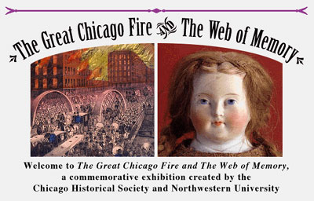

This is an archived copy of History Matters, provided by the Roy Rosenzweig Center for History and New Media. To explore this content in a new interface, visit Who Built America?.

The Great Chicago Fire and the Web of Memory
http://www.chicagohs.org/fire/index.html
Created by the Chicago Historical Society and Northwestern University, 1996.
Reviewed
Oct. 2001.
Any general historical resource on such a pivotal event as the great Chicago fire of 1871, which nearly destroyed the new nation’s most representative city, must deal effectively both with the complex facts of the event itself and with the even more complex aftermath. Readers need a rich understanding of the tangle of social perspectives and mythologizing that enshrouds the event, but they also need to get a concrete grip on the event despite the historical confusion.

This Web site, first published in 1996, meets these standards both deeply and broadly, providing an impressive mix of archival materials and interpretive essays that can serve a very wide range of readers, from junior high school students through university researchers. Produced by the Chicago Historical Society (which provided the extraordinary archival materials) in collaboration with Academic Technologies of Northwestern University (which created the Web site), the voluminous interpretive and introductory text was all written by Carl Smith, the award-winning author of Urban Disorder and the Shape of Belief: The Great Chicago Fire, the Haymarket Bomb, and the Model Town of Pullman (1995).
There are actually two parallel Web sites here, neatly hyperlinked together. The first, The Great Chicago Fire, deals with the context, causes, course, and consequences of the fire. The second parallel site, titled The Web of Memory, deals with the cultural representations of the fire, with sections devoted to such issues as “The Eyewitnesses,” "Media Event,“ "The O’Leary Legend,” and “Commemorating Catastrophe.” Each section of each parallel site is further divided into three genres: 1) interpretive “Essays” (by Smith), each about 1,000 to 1,500 words; 2) “Galleries” (maps, photographs, sketches, lithographs, paintings); and 3) “Library,” containing manuscript (mostly letters) or printed sources (newspapers, plays, pamphlets, books).
The archival materials provide compelling viewpoints from a wide social and institutional spectrum. The “Galleries” contain real treasures, such as six “on-the-scene” drawings by the illustrator Alfred R. Waud and photographic surveys by Jex Bardwell and George N. Barnard. One “Library,” titled “An Anthology of Fire Narratives,” presents twenty-one gripping eyewitness accounts. The site very effectively allows rapid browsing from one genre to the other, enabling a reader to build powerful visual and verbal impressions of the conflagration.
Each archival object is both introduced with a brief editor’s note and captioned with precise date and provenance information. In other words, this site can easily be cited. While attractive, this Web site does not excel in graphic or programming sophistication. It does excel in substance, navigability, and readability, and these are more important qualities. Significantly, Carl Smith holds the chair titled Charles Deering McCormick Professor of Teaching Excellence at Northwestern University. His essays are peppered with Socratic questions inviting the reader to interrogate the materials presented. This is a real model for multimedia history: strongly recommended as assigned reading for students of many levels, in fields ranging from general U.S. and urban history to popular culture.
Philip J. Ethington
University of Southern California
Los Angeles, California